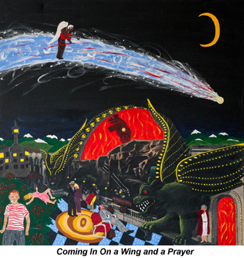

past exhibition |
|||
YOU'RE GONNA LOVE ME SOME DAYPaintings by Len Jenkin 4x4, acrylic and collage on canvas December 4-January 26 For information, please contact: Len Jenkin is a self-taught artist, who’s also a playwright, screenwriter, and novelist. His art is influenced by a career in storytelling, stage design, and directing. His work also links to contemporary American "outsider" art. The paintings are mysterious narratives, the stories hidden and obvious at once, shadowy, strange and ambiguous. They often include language as well as images. He is a painter of internal landscapes, of the imagination, and of the everyday American scene. His plays have been done all over the United States, as well as in England, France, Germany, Denmark, and Japan. His most recent international production was in May 2013 in Beijing (PORT TWILIGHT), and U.S. production in Dallas, Texas (TIME IN KAFKA). His novels have been published by Sun & Moon Press in Los Angeles, and Green Integer Press in Los Angeles. The most recent, N JUDAH, is available at Amazon.com. His paintings were recently chosen to be exhibited at the Governor's Island Art Fair in New York City, Fall 2012. For more information, please visit: http://www.lenjenkin.com/paintings.html |
|||
exhibition archive |
|||
| 2016 | 2015 | 2014 | 2013 |
| 2011 | 2010 | 2009 | 2008 |